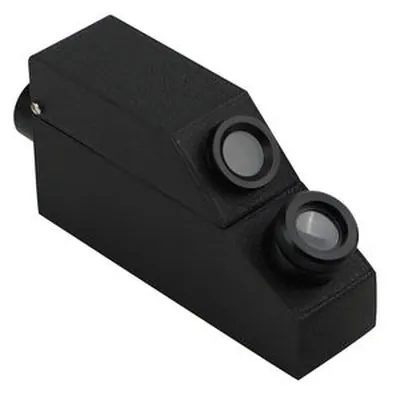

熱導儀與硬度計：鑽石的試金石
鑽石的導熱性是所有寶石之最——熱導儀一觸，鑽石與仿品立刻現形。

核心定義
熱導儀（thermal probe）：利用鑽石「導熱極佳」的特性——探針觸碰，導熱快的亮燈「鑽石」，導熱慢的亮「仿品」（CZ、玻璃、莫桑石）——它是珠寶店最常見的鑽石快篩儀器。硬度計（hardness point）：用標準硬度筆測試寶石表面（摩氏硬度）——確認「夠不夠硬」。兩個工具，都是「物理特性測試」。
熱導儀的局限：莫桑石（碳化矽）的導熱性接近鑽石——熱導儀可能「誤報」鑽石。所以現代鑑定用「導熱＋電導」雙模式（莫桑石電導不同）——科技攻防的縮影。
特徵與分類
| 材料 | 導熱 | 熱導儀 |
|---|---|---|
| 鑽石 | 極佳 | 亮燈（鑽石） |
| 莫桑石 | 接近鑽石 | 可能誤報 |
| CZ | 差 | 亮燈（仿品） |
| 玻璃 | 差 | 仿品 |
| 石英 | 中 | 仿品 |
硬度計的應用：摩氏硬度標準（滑石 1→鑽石 10）——標準硬度筆測試「能不能刮傷」：能刮＝寶石硬度低於筆。硬度測試是「破壞性弱」的測試（可能留痕）——僅限低價值樣品與特定場景。
科學原理
鑽石導熱的科學：鑽石的碳晶格極規則、聲子傳導極佳——導熱係數是所有材料之最（約 2000 W/m·K，比銅高 5 倍）。熱導儀把熱脈衝注入寶石，測「溫度下降速度」——鑽石降得快（導熱快）。
莫桑石的挑戰：碳化矽導熱接近鑽石——單靠熱導會誤報。解法：電導測試（鑽石不導電、莫桑石導電）——「熱導＋電導」雙模式是現代標準。硬度計的科學：摩氏硬度是「相對刮傷」標準——寶石間的互刮測試。
鑑定與鑑別方法
- 熱導儀：先測導熱
- 電導測試：區分莫桑石
- 放大鏡看重影：莫桑石雙折射
- 比重：CZ 5.6 重
- 實驗室：最終定論
市場行情與保養建議
市場價值：熱導儀（約數百人民幣）是「鑽石快篩」的標準工具——珠寶店、當鋪人手一支。但要記住：莫桑石能騙過單模式熱導儀——「熱導＋電導＋放大鏡」三招齊用，才是安全組合。
提醒：熱導儀是「快篩」不是「鑑定」——高價鑽石務必實驗室證書（GIA 等）。儀器能擋仿品，證書能定身世。
常見誤區
莫桑石（導熱接近鑽石）可能誤報——「亮燈」是必要條件，不是充分證明。莫桑石要用電導＋放大鏡區分。
剛玉（9）也很硬——硬度測試只能「排除」低硬度仿品，不能「確認」鑽石。硬度不是身分證。
冷知識
它是「導熱之王」——所以鑽石貼在皮膚上「涼」得很久。熱導儀的原理，就是鑽石的「冰涼感」。
碳化矽導熱接近鑽石——它曾讓熱導儀集體「誤報」。科技攻防，鑑定與仿品同步進化。
反直覺觀點
最硬的寶石＋最導熱的材料——物理極致讓鑽石「好認」又「難仿」。極端的物理，是最好的身分證。
莫桑石的導熱是物理事實——儀器原理決定它的盲區。鑑定的進步，是「認知盲區」的不斷發現。